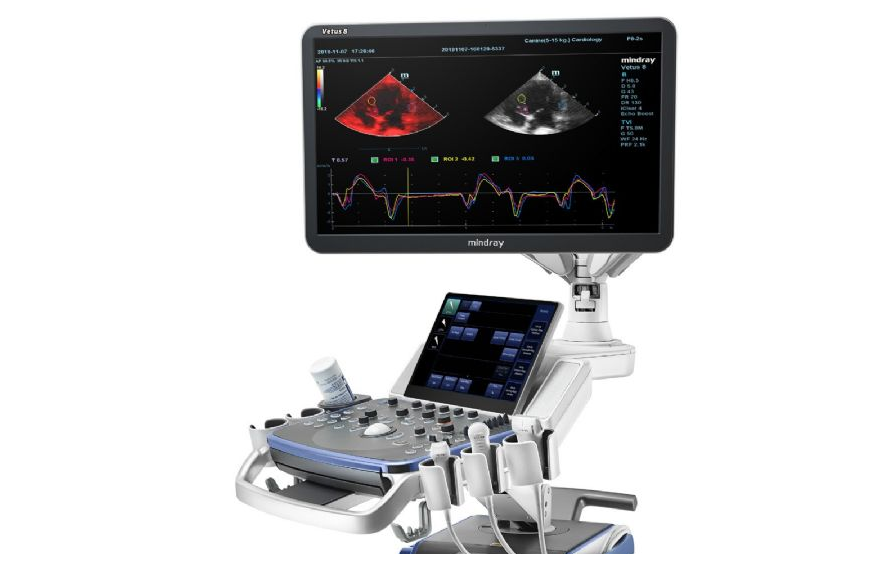
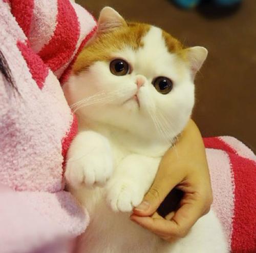

|
Muayene Teşhis Tedavi Hizmetleri Kliniğimizde hekimlerimiz modern teknolojinin sağladığı her türlü imkanı kullanarak muayene,teşhis,tedavi ve gerektiğinde operatif müdahale hizmetlerini vermektedirler.Kliniğimize gelemeyen hastalarımız için yerinde muayene hizmetimizde vardır |
|---|
 |
Pet Cerrahi Hizmetleri Kliniğimizde her türlü yumuşak doku ve kemik doku operasyonları kapalı devre gaz anestezisi ile yapılmaktadır.Kemik operasyonlarımız İ.Ü.Veteriner Fakültesi Cerrahi Bölümü’nden bir profesör hocamız ile birlikte yapılmaktadır.Açıldığımız tarihten itibaren büyük bir başarı yüzdesiyle operasyonlarımızı gerçekleştirmiş olup,neredeyse yüzde 0 post-op enfeksiyon,kontrendeksiyon olayı yaşamış bulunmaktayız. |
|---|
|  | Radyoloji ve Ultrason Hizmetleri Ultrason muayenelerimizi bu konuda çok tecrübeli olan Vet.Hekim M.Özgür ŞİMŞEK yapmaktadır.Hamilelik teşhisi,doğum zamanı belirlenmesi,karaciğer,böbrek,pankreas ve diğer organların muayeneleri hekimimizin tecrübesi ile başarılı bir şekilde yapılmaktadır. |
|---|
|  | Pet Kuaför Hizmetleri Kliniğimiz Beylikdüzü bölgesinde uzun zamandır tam zamanlı pet kuaför hizmeti vermektedir.Yıllar için yaptığı binlerce traş ile konusunda uzman olan hekim arkadaşımız ile önceliğimiz eziyet vermeden keyifli bir tıraştır.Bizler asla tıraş esnasında kedi veya köpeğe sert davranış göstermiyoruz.Ekipmanlarımız her tıraş sonrası otoklav ile sterilize edilmekte,havlular ve sarf malzemeleri her tıraştan sonra yıkanmaktadır.Şampuan ve krem olarak, dünyanın en iyi ürünü olan Pet Esthe ürünlerini kullanmaktayız.Ayrıca çamur banyosu hizmeti de vermekteyiz. |
|---|